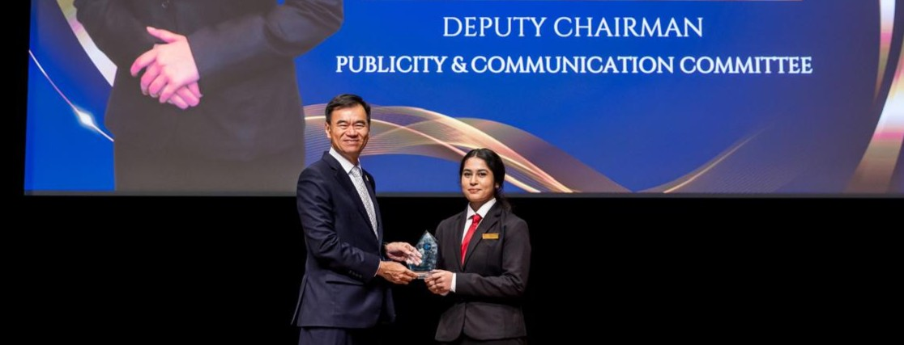

Roles & Recognition
President
Gavel Club (Young Toastmasters)
Led ITE College Central's Gavel Club, a public speaking and Toastmasters-affiliated organisation, managing events, developing member skills, and representing the club college-wide.
2025Deputy Chairman
Publicity & Communication Committee
Student Council, ITE College Central. Served as Executive Committee member driving publication and communication initiatives, social media strategy, and inter-college communications.
2025TEDx Presenter
TEDxITE College Central Youth
Selected as a presenter for TEDxITE College Central Youth, delivering a talk on personal growth and resilience titled "Finding myself through the journey."
2025
Competitions &
Contests
Singapore Futures Youth Competition
Lee Kuan Yew School of Public Policy · National Level
Represented ITE College Central at this national competition. The team focused on the future of the Medical Industry and AI in Singapore. Achieved 3rd place as ITECC representative with team placing 5th overall.
National Level 2025TSS × LTA Joint Hackathon
Amazon Web Services · Road Safety & Digital Solutions
Led the hackathon team to develop a digital future solution for LTA road safety management, leveraging AWS cloud tools and collaborative problem-solving under time pressure.
College Level 2025Download File
INTER-IHL Debate Challenge
Institute of Higher Learning Debate
Competed as part of the main debate team in the Inter-IHL Debate Challenge 2025, representing ITE College Central against polytechnics and other institutions.
Inter-IHL 2025Red Dot Competition
Singapore Art Museum · National Art Event
Represented CHIJ St. Joseph's Convent at this national art competition celebrating Singapore National Day in 2021. Achieved a top 10 position in the competitive national-level event.
National Level 2021

Speaking &
Facilitation
SG Perspectives
With Senior Minister of State Mr. Heng Chee How, Ministry of Defence, at the Environmental Development Centre
National Day Celebrations · The IlluminITE
ITE College Central National Day celebration event
HarmonyWorks Conference 2024
With Senior Minister Lee Hsien Loong, facilitated conference discussions
SG Perspectives
With Ambassador Ong Keng Yong, at the Environmental Development Centre
Future of Youth Launch
Civic Plaza, Ngee Ann City, presented on behalf of ITE College Central
TEDxITE College Central Youth
Delivered a TEDx talk on personal development and finding purpose through challenges
IBF Golden Jubilee ITE Scholarship Launch
Represented ITE College Central at the event featuring keynote by Mr. Gan Kim Yong, Minister for Trade and Industry
Beyond the
Classroom
WorldSkills Singapore 2025
Youth Press Corps representative for ITE College Central, documenting the WorldSkills Singapore competition for social media content.
United Women Singapore STEMentorship 2025
Participated as mentee in the UWS STEM Mentorship Programme, gaining guidance from industry professionals in technology.
Hong Kong Student Exchange Programme
Served as Team Leader for the ITECC delegation in the student exchange programme.
SYF Guitar Ensemble Accomplishment
Received Accomplishment awards at the Singapore Youth Festival as part of the Guitar Ensemble CCA, twice in 2018 and 2023.